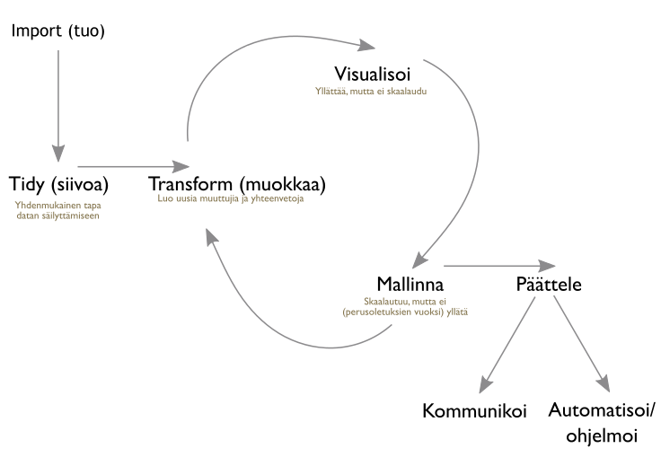

Johdanto
1 Ennakkotehtävät
1.1 Lue
2 Kurssilla käytettävä R-kielen murre eli ns. “Hadleyverse”

3 Kurssin rakenne
3.1 Import / tuo
R:n perusasennuksessa tulee joukko datoja mukana, jotka ovat heti käytettävissä. Saat datan kuvauksen kirjoittamalla ?datan_nimi. Aluksi käytämme dataa ?mtcars.
?mtcars
head(mtcars)## mpg cyl disp hp drat wt qsec vs am gear carb
## Mazda RX4 21.0 6 160 110 3.90 2.620 16.46 0 1 4 4
## Mazda RX4 Wag 21.0 6 160 110 3.90 2.875 17.02 0 1 4 4
## Datsun 710 22.8 4 108 93 3.85 2.320 18.61 1 1 4 1
## Hornet 4 Drive 21.4 6 258 110 3.08 3.215 19.44 1 0 3 1
## Hornet Sportabout 18.7 8 360 175 3.15 3.440 17.02 0 0 3 2
## Valiant 18.1 6 225 105 2.76 3.460 20.22 1 0 3 1Samat datat + paljon muuta löytyy Vincent ylläpitämältä Rdatasets-sivustolta, josta voimme ladata esimerkiksi saman mtcars-datan komennolla
d <- read.csv("https://vincentarelbundock.github.io/Rdatasets/csv/datasets/mtcars.csv",
stringsAsFactors = FALSE)
head(d)## X mpg cyl disp hp drat wt qsec vs am gear carb
## 1 Mazda RX4 21.0 6 160 110 3.90 2.620 16.46 0 1 4 4
## 2 Mazda RX4 Wag 21.0 6 160 110 3.90 2.875 17.02 0 1 4 4
## 3 Datsun 710 22.8 4 108 93 3.85 2.320 18.61 1 1 4 1
## 4 Hornet 4 Drive 21.4 6 258 110 3.08 3.215 19.44 1 0 3 1
## 5 Hornet Sportabout 18.7 8 360 175 3.15 3.440 17.02 0 0 3 2
## 6 Valiant 18.1 6 225 105 2.76 3.460 20.22 1 0 3 12016 Markus Kainu.

Tämä teos on lisensoitu Creative Commons Nimeä 4.0 Kansainvälinen -lisenssillä.
Tämä sivusto on tehty R:ssä Rmarkdown-paketin uusimmassa kehitysversion uudella render_site()`-funktiolla, jonka tekee staattisten responsiivisten verkkosivujen tekemisen helpoksi. Katso ohjeet: